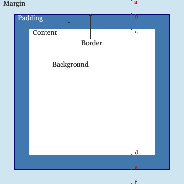

前言
虽然我CSS水平很水，但是水不是不学好的理由。
最近寒冬大哥针对面试发了一点“闹骚”，我们来看看他的微博是怎么说的呢？
面试的时候问个css的position属性能刷掉一半的人这是啥情况……其实这问题我本来打算的是可以顺着一路扯到
normal flow、containing block、bfc、margin collapse，base line，writing mode，bidi，
这样一路问下去的，奈何第一个问题（亲我真的只问了position有哪些取值和行为啊）就悲剧了……
- position属性常用的取值static、relative以及absolute和它们的基本行为是每个前端都应该掌握的。这包括relative和absolute的定位原点。
- fixed旧版本IE不支持，但是一个对技术有热情的工程师也是应该了解的。
- 有过研究工程师可以知道absolute的containing block计算方式跟正常流不同，当然如果没读过标准的话，表述方式不一定是这样。
- 对CSS布局有深入研究的工程师会知道position跟display、margin collapse、overflow、float这些特性相互叠加后的行为。
说句老实话，在状态好的情况下，若是被问到这个题，我还能和他说道说道（很浅的那种），在状态一般的情况下，我估计自己也直接悲剧了，那造成这个的是什么原因呢？
答案毫无疑问的是我CSS水平是很水的，当项目经验不够的情况下，看书是不能记住一些东西的，所以还是需要项目实践。
于是抱着我水我自豪的态度，我来试试他这道题水到底有多深，居然会刷掉一半的人。
思考过程
这个题若是单纯提出position的几个属性，倒没什么问题，但我们来看看他的发散：
normal flow（一般流）
containing block（包含块）
bfc（我深刻的意识到我一定见过他，但可耻的忘的一干二净了！）
margin collapse（搞不懂啊，应该是float引起的元素坍塌吧？）
base line （基线对齐）
......
后面的就完全没有印象了，完了我想说，大哥我们能说中文吗。。。至少给点解释吧，对于css菜鸟来说看题目都很吃力的。。。。（掩面而泣）
惊叹
仔细阅读题目并加以分析后，你会发现他这潭水是很深的，这道题快5分钟可结束，慢可问上半个小时，而且问完了CSS都可以忽略不计了。。。
为什么这么说呢？
① position主要用于页面布局，对css布局熟悉的朋友能很好的运用他布局，甚至抛弃float那个魔鬼（昨天我做了一道面试题就不用float布局，因为float本身是不用于布局的，这么做的大哥，我不知道对不对，但我认为既然float不应该用于布局，我们便应该下意识的少用）。
② 在他发散过程中由将块级元素与行内元素提到了，甚至细分到了行内元素的垂直对齐方式，更有可能发散到line-height上面，不可谓不深啊！
③ 在以上能做好的都已经不错了，然后这道题更是可以细致到各种应用细节，比如在IE7一下浏览器使用relative的z-index会有什么问题，比如在布局上你会使用float吗，float为什么会引起元素坍塌，你如何解决元素坍塌......
......
然后的然后，他这道题真的发散开了就很大了，对于我这种水货来说，看不懂啊，于是便只能在自己理解的方面做下说明，于是我们开始吧！
基本视觉格式化
凡是不能一蹴而就，我们一步步来，先了解点基础的东西吧
我们在使用CSS过程中会发现很多“怪异”的现象，如果我们掌握了CSS中视觉表现模型是如何工作的了，那么是不是会更加接近真理呢？
基本框
CSS假定每个元素都有一个基本框，这个矩形框便是我们所说的元素框（在CSS3出现后圆形、团原型也不是不可能哦）
各个元素框中心有一个内容区（content area），这个内容区域会有以下属性：内边距，外边距，边框。我这里又引用下其他大哥的图吧：


包含块
因为每个元素都相对于其它包含块摆放，所以包含块就是一个元素的“布局上下文”，
1 <body> 2 <div> 3 <p> 4 刀狂剑痴叶小钗</p> 5 </div> 6 </body> 7 </html>
在这个例子里面，p的包含块便是div（包含块由最近的块级元素担当），所以p元素依赖于div布局，div依赖于body，行内元素摆放于包含块没什么关系。
块级元素
块级元素很霸道，会独占一行作为自己的王国，一般一个元素的width被定义为从做内边距到右内边距的距离（IE6对盒模型解释有误）。margin、padding、width、height可以确定文档布局。
多数情况下文档高宽我们不太关心，宽度一般会铺满浏览器，高度会自己延生。
水平格式化
<p style="width: 200px; padding: 10px; margin: 20px;"> 刀狂剑痴叶小钗</p>
本来p元素宽度是200，但是由于padding问题宽度就变为220了，外边距再延生40，所以整个宽度就是260了，这样便隐式的增加了width的值！
但是，其右边距却不是20，因为CSS还有一个规则：正常流块级元素的margin，width，padding，border之和必须等于包含块的内容区域，所以右边距会被重置为auto。
所以我们要将一个元素居中会这样设置
<div style="margin: 0 auto;"></div>
在宽度确定的情况下，做外边距与右外边距的值会被设置为相等的值（IE6忽视之，他会将之设置为0）。
负外边距
由于margin可以被设置为负值，所以整个情况又会变得比较复杂，因为按照我们上面的规则，width便有可能超过其包含块！！！
<div style=" margin: 20px auto; width: 300px; background: gray; padding: 10px;"> <p style=" background-color: Orange;"> 刀狂剑痴叶小钗</p> </div>
<div style=" margin: 20px auto; width: 300px; background: gray; padding: 10px;"> <p style=" background-color: Orange; margin: 0 -20px;"> 刀狂剑痴叶小钗</p> </div>
所以，我们平时操作负边距时候，其实是增加了高宽，若是高宽确定的情况下，那边是其他几个属性被增加了，带来了元素移动的错觉。
垂直格式化
块级元素的高度默认由其内容决定，我们可以为元素显示设置高度，但是这样的话，元素框便不会自动增加了。
垂直居中
在水平情况下设置auto后，会取相同的值，当在垂直情况下，情况有所不同，margin: auto 0;这种情况下，上下外边距会被重置为0，元素框失去了外边距（定位元素有所不同）。
<div style=" margin: 20px auto; width: 300px; height: 200px; background: gray; padding: 10px; position: relative;"> <p style=" background-color: Orange; width: 130px; height: 20px; margin: auto; position: absolute; "> 刀狂剑痴叶小钗</p> </div>
外边距合并
外边距合并的问题大家都知道，上下外边距会发生合并现象，但是有种情况会让事情变得比较复杂：
<html xmlns="http://www.w3.org/1999/xhtml"> <head> <title></title> <style type="text/css"> body { background: #ECECEC; } .outer { background: white; border: 1px solid #CCCCCC; width: 300px; } .inner { margin: 10px; padding: 8px; background: none repeat scroll 0 0 #1C87D5; color: white;} </style> </head> <body> <div class="outer"> <h1 class="inner"> 来个测试走</h1> </div> </body> </html>

若是我们将代码做一点改变：“将外层元素border”去掉；那么。。

他这种合并方法就彻底让我傻眼了。。。。。
行内元素
行内元素的布局比块级元素要复杂，我们使用块级元素布局，所以会比较重视，但是往往忽略行内元素的布局，这是会吃亏的。。。我们来看一个例子：
<div style="margin: 20px auto; width: 300px; height: 200px; background: gray; padding: 10px; "> <span style=" border: 1px dashed orange;"> 刀狂剑痴叶小钗刀狂剑痴叶小钗刀狂剑痴叶小钗刀狂剑痴叶小钗刀狂剑痴叶小钗刀狂剑痴叶小钗刀狂剑痴叶小钗刀狂剑痴叶小钗刀狂剑痴叶小钗 </span> </div>
行内元素和块级元素表现有很多不同，以上只是一个开始，我们来捋一捋，行内元素都有些什么东东：
匿名文本：
未被包含在行内元素的字符串
em框：
em框在字体中定义，也被称为字符狂
内容区：
内容区可以是元素中各个字符的em框串在一起构成的框，也可以由元素中字符字形描述的框。
行间距：
font-size与line-height之差/2便是行间距
行内框：
通过向内容区增加行间距来描述，对于非替换元素行内框刚好等于line-height
行框：
这是包含该行中出现的行内框的最高点和最低点的最小框，意思是行框上边界要高于最高行内框，最低也要大于最低的行内框
所以说行内元素坑坑爹呢，他的东西多着呢。。。
行内格式化
所有元素都有一个line-height属性，这个值会显著的影响行内元素显示，行高由其组成元素和其他内容（如文本）高度确定。
注意：line-height实际只影响行内元素和其他行内内容，不会影响到块级元素（至少不直接影响）
建立框
首先，对于行内元素来说，font-size确定了内容区的高度，如果一个元素的font-size是15px，那么内容区高度便是15px，因为所有元素的em框都是15px。
如果一个行内元素的font-size为15px，line-height为21px，相差的6px便是行间距，由此行内框形成：
但是有一个场景又会让整个发展变得扑朔迷离：
<div style="line-height: 12px; font-size: 12px; margin: 20px auto; background: gray;"> 刀狂剑痴叶小钗<span style=" font-size: 24px;">刀狂剑痴叶小钗</span>刀狂剑痴叶小钗 </div>
对于匿名文本来说，内容高度没有变化，半间距为0，但是对于span来说，line-height减去font-size后我们得到的半间距为-6，所以其行内框依旧是12px，内容区却大了出来。
vertical-align
margin的方式不能垂直对齐，行内元素便提供了vertical-align属性：
top
将元素行内框的顶端与包含该元素的行框的顶端对齐
bottom
将元素行内框的低端与包含该元素的行框的底端对齐
text-top
将元素行内框的顶端与父元素内容区的顶端对齐
text-bottom
将元素行内框的底端与父元素内容区的底端对齐
middle
将元素行内框的垂直中点与父元素基线上0.5ex处一点对齐
补充知识（http://www.zhangxinxu.com）

浮动和定位
经过以上的知识，我们知道了，所有文档元素都有一个框！被称为元素框，它描述了一个元素在文档布局中所占空间大小，所以框与框之间是会互相影响的。
接下来我们进入本文重点，浮动与定位，以现在的布局来说，说白了就是浮动和定位，所以掌握了他们就是掌握了布局。
浮动float
float是个奇怪的东东，他最开始的提出是用作让图片浮动，以便文字能围绕着图片书写，仅此而已！
所以我们来看看float这个让人又爱又恨的家伙都干了些什么？？？
浮动元素会以莫种方式从文档的正常流中删除，他是他还是对文档布局有一定影响
我们使用float浮动做了很多其本职工作以外的事情，于是我们会混淆，我们会回看不清float真正的面目。
浮动真正的意义在哪里呢？要知道这个问题的答案很简单，假设现在CSS中没有浮动(float)属性，那么会变成一个什么样子。
我们会发现，目前流行采用浮动方法实现的无论是分栏布局，还是列表排列我们都可以用其他一些CSS属性（不考虑table）代替实现，
唯一一个实现不了的就是“文字环绕图片”，我是想不出来能有什么方法可以让文字环绕图片显示。好，这个替代不了的作用才是float真正的意义所在
——张鑫旭
看看以上说法，他这个是非常有意义的，我们回过头来一看，好像确实是这么回事的，float真的干了很多不该干的事情呢，所以我们的布局才有那么多莫名其妙的BUG。
float的内幕
在详细了解他之前，我们看一看包含块（containing block），浮动元素的包含块是最接近的块级祖先元素：
<p>dssd <img style=" float: left;" /> ssd</p>
img的包含块就是最近的p标签，然后浮动元素会生成一个块级框（inline元素也会），其实我们可以认为float就是不带方向性的inline-block（事实上这是非常错误的认识）。
浮动元素的摆放有许多规则
① 浮动元素不能超过包含块的边距
② 浮动元素的左右外边距必须是源文档中之前出现的左浮动元素的右外边距（这句话我不太理解，我们下来看看）
③ 左浮动元素不会出现在右浮动元素的右边
④ 浮动元素的顶端不能比其父元素的内顶端还高
⑤ 浮动元素的顶端不能比之前所有浮动元素或者块级元素的顶端更高
⑥ 源文档中一个浮动元素之前出现另一个元素，浮动元素的顶端不能比包含块元素所生成框的任何行高还高
⑦ .......
后面还有几个规则呢，我这里都不想写了，说实话我看着这么多规则第一映像就不想用这个属性了。。。
float我们都“比较”熟悉，所以对他的表现一般还是抓得准的，因为我们认为其实带方向的inline-block，于是我们来看看浮动的破坏性。
inline boxes
行内元素会生成一个叫行内框的东西，前面我们已经知道了
在containing boxes中，一个个inline boxes组成了line boxs(行框)，这是浮动影响布局的关键box类型
content area 内容区是一种围绕文字看不见的box，大小就是font-size
在张鑫旭大哥的博客中有两张很有意思的图，我这里拿来主义搞来看看
按照此图的研究，得出了以下结果：
图片为一个inline boxes，文字也是inline boxes，行高（line boxes）是由其内部最高的inline boxes高度决定的所以行高这里便是图片的高度
此时图片与文字是同一box类型的元素，在同一行上，所以这里他们是对齐的
但是，float图片后会有意想不到的变化
我们看到第二张图，float破坏了图片的inline boxes，图片的inline boxes米有了！
当图片失去inline boxes特性时就无法与inline boxes文字在一起了，他们已经不是一个家庭的人了。。
图片于是靠边站了（float带给元素的是降级啊）
在CSS中所有高度都是由CSS模型产生的：box盒模型，line box 模型（line-height），inline boxes直接受控于line-height
真正的高度则是由每行的inline boxes组成的line boxes，而每行的line boxes高度垂直堆叠形成了containing box的高度
所以，没了inline boxes的意思就是没了高度，就跟男人没有鸟是一个道理的。float就恰恰干了这种事情。。。。直接把人家的inline boxes给搞了，让别人没了高度
所以，float可以让文字围绕着图片，因为图片没有了高度，但是他是有宽度的哟，元素没有了高度就会造成另一个事实：父级块级元素高度塌陷！我们想想块级元素里面都没有高度了，他塌陷是非常合理的啊！所以我们又会搞很多事情来清除浮动带来的高度塌陷。所以我们一伙布局可以尽量的少使用float，让他干他本质的事情吧，因为想做太监的人也不多。。。
Position登场
最后，标题的主角终于登场了，写到这里我其实都没什么想说了，也不太说得出来了。。。。这就是舍本逐末吧！
首先position有几个属性呢？这个问题我承认有一点白痴。
static
relative
absolute
fixed
其实对于position来说，他的东西是很简单的，用来用去就那么几个场景，操作的是块级元素，很单一的。所以我们来看看本篇开始提出的问题
① relative与absolute的定位原点，无图无真相，为了解决这个问题，我们写个例子
<!DOCTYPE html> <html xmlns="http://www.w3.org/1999/xhtml"> <head> <title></title> <style> * { margin: 0; padding: 0; } </style> </head> <body> <h1> 块级元素</h1> <div style="margin: 20px auto; width: 300px; height: 200px; background: gray; padding: 10px; position: relative;"> <p style="background-color: Orange; width: 130px; height: 20px; margin: auto; position: absolute;"> 刀狂剑痴叶小钗 </p> </div> <h1> 行内元素</h1> <div style="line-height: 12px; font-size: 12px; margin: 20px auto; background: gray; position: relative;"> 刀狂剑痴叶小钗<span style=" font-size: 24px;">刀狂剑痴叶小钗</span>刀狂剑痴叶小钗 </div> <p style=" position: absolute;">dssd <img style=" float: left;" /> ssd</p> </body> </html>
可以看到，在不指定left与top的情况下，其默认是按照一般流的方式布局的。事实上我刚刚那句话是错的！
对于absolute定位的元素，在默认情况下，他之前的对他没有任何影响，但是他之后的东西我们可以看到，事实上会覆盖他的位置的，其实也不是覆盖他的位置了，说明他的原点就在那里只不过他就跟float元素似的没有了高度，最后连宽也没有了。。。
② IE6中的fixed属性，对于这个东东我还确实没有做过处理，但是应该是使用js控制的，他这个就有个效果上的问题，肯定会发生抖动的。
但是经过资料查询发现IE6下用CSS也可以实现的
解决方案：CSS表达式应该避免，因为会很大的托坏效率，所以还是建议使用js
1.将body元素中添加_background-attachment:fixed; _background-image:url(about:blank);这两个属性，由于这个问题只在可耻的IE6下，所以就针对IE6写个hack。
2.将需要用固定定位的元素中加上_position:absolute; _top:expression(offsetParent.scrollTop); _left:expression(offsetParent.scrollLeft);这个3个属性。
3._top:expression((offsetParent.scrollTop)+50); 这样后面的数字就是你需要的设置的距离。
这个问题，我个人认为意义真不大，因为我最近的公司直接抛弃IE8了何况IE6呢，中国的这些大爷还真不能太娇惯了。。。
PS:一件可耻的事情就是，这种情况下margin: auto;可以实现垂直居中的目的。。
<div style="margin: 20px auto; width: 300px; height: 200px; background: gray; padding: 10px; position: relative;"> <div style="background-color: Orange; top: 0; bottom: 0; height: 20px; margin: auto 0; position: absolute;"> 垂直居中 </div> </div>
③ BFC（可耻的我最后发现我没有将他。。。）
什么是BFC(Block Formatting Context)，简单讲，它是提供了一个独立布局的环境，每个BFC都遵守同一套布局规则。例如，在同一个BFC内，盒子会一个挨着一个的排，
相邻盒子的间距是由margin决定且垂直方向的margin会重叠。而float和clear float也只对同一个BFC内的元素有效。
尼玛可悲的就是就算读者这个解释我依旧不知道他是干什么的。。。。这里我可耻的给跪了。。。留待以后解决吧。
结语
我发现自己是标题党！前前后后扯了这么远，居然最后也没有对题目做出正面回答，原因是什么这里我不说了，你懂的（见第一段话）！
不正面回答其实原因有几个，第一是我还真没完全理解题目要问什么，第二就是对于发散的那些名词我可耻的也不是全懂。。。
所以我若是去面试铁定悲剧，所以CSS还是需要好好的大力的学习啊！！！！！